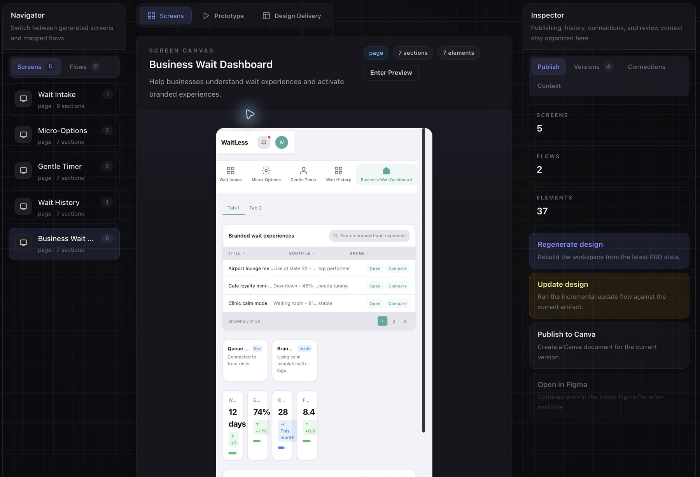

Signifi
One idea. Every artifact in sync.
Product notes become linked specs, user stories, test cases, and interactive prototypes. I co-founded Signifi and lead development of the engine that keeps them connected.
Under the hoodThe problem, my contribution, and the tradeoff
The problem
When an AI-generated requirement changes, its stories, tests, and prototype can drift out of sync.
What I built
An orchestrated planner/worker pipeline using structured JSON outputs and shared run state to keep PRDs, stories, prototypes, and timelines aligned.
The engineering decision
Structured outputs give each generation step an explicit contract. Shared context keeps later artifacts connected to the same product brief, while Next.js renders the resulting prototype.